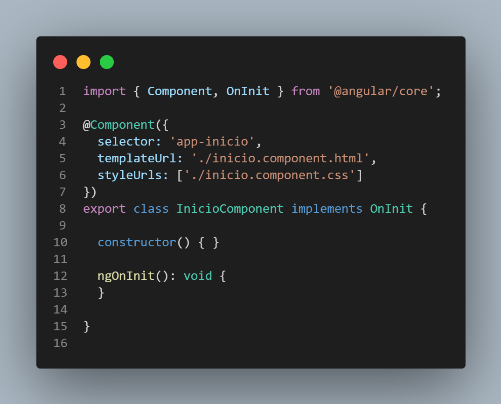

Primeros pasos con Angular
Instalar Angular
- A través de npm: > npm install -g @angular/cli
- Comprobamos la instalación: > ng --version
Iniciar el proyecto
- Crear proyecto: > ng new nombreProyecto
- Para levantar el servidor en el puerto http://localhost:4200 : > ng serve
tambien
puedes incluir el comando: -o y se abrira el navegador por defecto.
Comandos para crear elementos
- > ng generate tipoDeElemento nombre
- Tipos de elementos: component, directive, route, pipe, service, class, interface y
enum
- Ejemplos:
- > ng generate component inicio
- > ng g c inicio, ejemplo anterior simplificado.
- > ng generate intrface interfaces/persona, se puede crear una ruta para
mayor organizacion.
Build del proyecto
- > ng build
- > Si se necesita empaquetar el codigo añadir el sufijo --prod
Componentes
Los componentes son vistas que se pueden reutilizar y organizar en función de las necesidades de nuestro
proyecto
